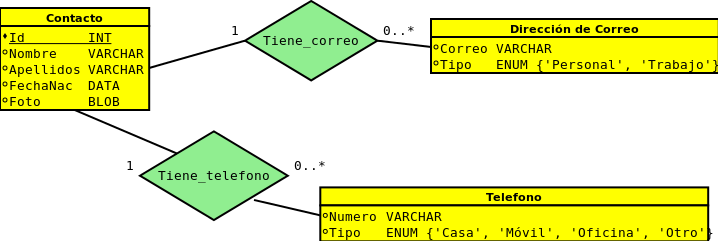
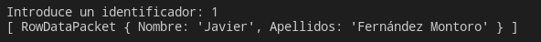
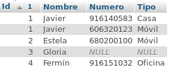

Acceso a Base de Datos

Acceso a bases de datos
Paquetes para conexión a un SGBD:
- Bases de datos relacionales:
better-sqlite3,sqlite3,sqlite: SQLite. Usaremos esta BDmysql2,mysql: MySQL, MariaDB.node-oracledb: Oracle.sequelize,prisma: ORMs para Base de Datos.
-
Bases de datos NoSQL:
mongodb: MongoDB / FerretDB (JSON)mongoose: ODM para MongoDBredis,iovalkey: Redis / Valkeycassandra-driver: Apache Cassandranano: Apache CouchDB
Base de datos de ejemplo
Agenda de contactos
Nota: Guardar binarios en la bbdd no es la mejor opción → mejor guardar ruta relativa en disco
Tabla Contacto
Tabla Tiene_Telefono
Tabla Tiene_Correo
SQLite
- Es una de las bases de datos más utilizadas sin que lo sepas
- Se utiliza en aplicaciones nativas (Android OS), Chrome, etc.
- Se utiliza en aplicaciones webs Bluesky
- usa una BD por usuario 🤯
- Soporte bastante completo de SQL
- También tiene limitaciones
- Escalado
- Replicado / Gestión desastres
- Se están creado complementos para paliar estos problemas:
LiteStream,LiteFS - NodeJS >= 23 incluye un driver nativo para sqlite
- Seguramente no te encuentres estos problemas incluso en proyectos profesionales.
Paquete better-sqlite3
Instalación mediante npm
npm install better-sqlite3
Editores / Visualizadores de bases de datos sqlite
Pasos para trabajar con la BD
Pasos para trabajar con la BD:
- Crear e inicializar un objeto
Databaseal inicializar la aplicación. - Realizar consulta o modificación. Si tenemos más de una operación usar transacciones
- Cerrar la conexión antes de cerrar la aplicación.
Con better-sqlite3 todas las operaciones son síncronas. Y tiene buen rendimiento
Inicializar la BD
import { join, dirname } from "node:path";
import Database from 'better-sqlite3';
function createConnection() {
const options = {
verbose: console.log // Opcional y sólo recomendable durante desarrollo.
};
const db = new Database(join(dirname(import.meta.dirname), 'data', 'aw_sw.db'), options);
db.pragma('journal_mode = WAL');
return db;
}
Activar el journal_mode=WAL es importante para mejorar la durabilidad y el rendimiento
Inicializar la BD
// Fichero: db.js
let db = null;
// [...]
export function getConnection() {
if (db !== null) return db;
db = createConnection();
return db;
}
export function checkConnection(db = getConnection()) {
const checkStmt = db.prepare('SELECT 1+1 as suma');
const suma = checkStmt.get().suma;
if (suma == null || suma !== 2) throw Error(`La bbdd no funciona correctamente`);
}
Mientras inicializamos la aplicación es recomendable verificar que podemos operar con la bbdd.
En el caso de una aplicación web seguramente no vamos a poder gestionar las peticiones de los usuarios.
Consultas SQL paramétricas
Supongamos que queremos realizar un programa que solicite un identificador al usuario y muestre la entrada de la tabla Contactos con ese identificador.

// Suponemos que la variable `id` contiene el identificador
// introducido por el usuario
connection.runQuery(
`SELECT Nombre, Apellidos FROM contactos WHERE Id = ${id}`,
(err, rows) => {
console.log(rows);
/* ... */
}
);
La variable id proviene de la entrada introducida por el usuario. Esta variable pasa directamente a la consulta SQL.
¿Qué pasa si el usuario hubiese introducido 4 OR TRUE?
Sentencia SQL ejecutada:
SELECT Nombre, Apellidos FROM contactos WHERE Id = 4 OR TRUE
Inyección SQL

Fuente: http://gizmodo.com/5498412/sql-injection-license-plate-hopes-to-foil-euro-traffic-cameras
Inyección SQL

Fuente: https://xkcd.com/327/
Consultas paramétricas en SQLite
Es una consulta SQL con «huecos» (denominados marcadores), representados mediante el símbolo ?, @nombreParametro o :nombreParametro.
Al rellenar los marcadores con valores concretos, estos se «escapean» de manera que se previenen los ataques de inyección SQL.
Ejemplo de consulta paramétrica:
INSERT INTO contactos(Nombre, Apellidos) VALUES (?, ?);
El método prepare() recibe una consulta paramétrica. En este caso, el segundo parámetro de este método recibe un array con los valores asignados a los marcadores.
Por ejemplo, si se ejecuta la consulta paramétrica,
SELECT Nombre, Apellidos FROM contactos
WHERE Id = ?
y asignamos la cadena "1 OR TRUE" al marcador, en realidad se ejecutará la siguiente consulta:
SELECT Nombre, Apellidos FROM contactos
WHERE Id = '1 OR TRUE'
Método prepare con consultas paramétricas:
prepare(consulta con marcadores)
// Suponemos que la variable `id` contiene el identificador
// introducido por el usuario
const stmt = db.prepare('SELECT nombre, apellidos FROM Contactos WHERE id = ?');
const resultado = stmt.get(id);
console.log(resultado);
// Suponemos que la variable `id` contiene el identificador
// introducido por el usuario
const stmt = db.prepare('SELECT nombre, apellidos FROM Contactos WHERE id = @idUsuario');
const resultado = stmt.get({ idUsuario: id});
console.log(resultado);
prepare y objetos Statement
prepare devuelve instancias de la clase Statement
Métodos más relevantes
get: Devuelve el primer resultado deSELECT.all / iterate: Devuelven todos los resultados deSELECT.run: Ejecuta la consulta y devuelve información sobre filas afectadas.
Consultas SELECT
Devuelve el primer resultado (si lo hay) resultado de una consulta (e.g. SELECT). Si no hay resultado devuelve undefined
get / all recibe los parámetros los parámetros de la consulta
iterate es como all pero devuelve iterador en vez de un array con todos los resultados
const stmt = db.prepare('SELECT nombre, apellidos FROM Contactos');
const primerResultado = stmt.get();
console.log(primerResultado); // { nombre: 'Joey', apellidos: 'Salnieri', ...}
const todos = stmt.all();
console.log(todos);
// [{ nombre: 'Joey', apellidos: 'Salnieri', ...},
// { nombre: 'Sally', apellidos: 'Luciano', ...}, ...]
const buscaPorApellidos = db.prepare('SELECT nombre FROM Contactos WHERE apellido LIKE ?');
const resultado = buscaPorApellidos.get('Kennedy');
console.log(resultado); // undefined
El resultado de una consulta es un array de objetos.
Cada objeto representa una fila. Los atributos de cada objeto son los nombres de las columnas devueltos por SELECT. Los valores asociados a cada atributo dependen del tipo de la columna correspondiente:
Ten en cuenta que SQLite tiene un sistema de tipos flexible.
| Tipo JS | Tipo SQL SQLite |
|---|---|
null |
NULL |
number |
REAL |
number o BigInt |
INTEGER |
string |
TEXT |
Blob |
Buffer |
Paquete mysql
Instalación mediante npm
npm install mysql
Pasos para trabajar con la BD:
- Crear e inicializar un objeto
Connection. - Realizar la conexión.
- Realizar consulta o modificación.
- Cerrar la conexión.
Salvo la primera, todas las operaciones son asíncronas.
Inicializar una conexión
En el paquete mysql existe la función createConnection() y los métodos connect(), query() y close() para realizar estos pasos.
Pero nosotros no vamos a abrir y cerrar conexiones de manera individual.
En teoría, una aplicación web debería abrir y cerrar una conexión cada vez que atienda una petición que requiera acceso a la BD, pero la creación de conexiones es un proceso relativamente costoso.
Pool de conexiones
Un pool de conexiones es un contenedor de conexiones permanentemente abiertas a una determinada BD
Con un pool conseguimos que las conexiones se reutilicen en sucesivas consultas a la BD, sin necesidad de crear conexiones nuevas continuamente.
El paquete mysql permite la creación de pools:
import mysql from "mysql";
const pool = mysql.createPool({
host: "localhost",
user: "root",
password: "",
database: "miBD"
});
//...
createPool() devuelve un objeto de la clase Pool.
Los objetos Pool permiten obtener conexiones mediante el método asíncrono getConnection().
Cuando se quiere realizar una consulta a la BD, se adquiere una conexión libre del pool de conexiones.
Cuando se ha terminado de trabajar con la conexión, se devuelve al pool, en lugar de cerrarla.
Obtener una conexión del pool
Método getConnection(callback)
pool.getConnection((err, connection) => {
if (err) {
console.log(`Error al obtener la conexión: ${err.message}`);
} else {
// ... realizar consulta ...
}
});
Con el objeto Connection podemos ejecutar consultas y modificaciones mediante SQL.
Ejecutar consultas
Método query(consulta, callback)
La función callback recibe, además del objeto error, el resultado de la consulta.
connection.query(
"SELECT Nombre, Apellidos, FechaNac, Foto FROM Contactos",
(err, filas) => {
if (!err) {
// Recorrer y procesar las filas
}
}
);
El resultado de una consulta es un array de objetos.
Cada objeto representa una fila. Los atributos de cada objeto son los nombres de las columnas devueltos por SELECT. Los valores asociados a cada atributo dependen del tipo de la columna correspondiente:
| Tipo Node | Tipo SQL MySQL |
|---|---|
number |
INT, SMALLINT, FLOAT, DOUBLE, ... |
string |
CHAR, VARCHAR, TEXT, ENUM, ... |
Date |
TIMESTAMP, DATE, DATETIME |
Buffer |
BLOB, BINARY, DATETIME, ... |
conexion.query(
"SELECT Nombre, Apellidos FROM Contactos",
function(err, filas) {
if (!err) {
filas.forEach(function(fila) {
console.log(`${fila.Nombre} ${fila.Apellidos}`);
});
// ...
}
}
);
Javier Fernández Montoro
Estela Hernández de la Fuente
Gloria Ruiz Sánchez
Fermín Córdoba Moreno
El pool contiene un número limitado de conexiones.
Por tanto, conviene devolver la conexión al pool, mediante el método release(), una vez obtenidos los resultados de la consulta.
conexion.query(
"SELECT Nombre, Apellidos FROM Contactos",
(err, filas) => {
if (!err) {
filas.forEach((fila) => {
console.log(`${fila.Nombre} ${fila.Apellidos}`);
});
conexion.release();
}
}
);
Inserciones, borrados y actualizaciones
Al igual que en las consultas, se utiliza query()
En estos casos, la función callback recibe un objeto con información sobre el resultado de la operación.
Atributos del objeto resultado:
affectedRows: número de filas insertadas, actualizadas o borradas.insertId: identificador de la última fila insertada, en caso de ser de tipoAUTO_INCREMENT.
Ejemplo
pool.getConnection((err, conexion) => {
if (err) { /* ... */ }
const sql = "INSERT INTO Contactos(Nombre, Apellidos) "
+ "VALUES ('Diana', 'Díaz')"
conexion.query(sql, function(err, resultado) {
if (err) {
console.log("Error de inserción: " + err);
} else {
// Imprime el identificador de la nueva fila
console.log(resultado.insertId);
// Imprime el número de filas insertadas
console.log(resultado.affectedRows);
// Devolvemos la conexión al pool
conexion.release();
}
});
});
Consultas paramétricas en MySQL
Es una consulta SQL con «huecos» (denominados marcadores), representados mediante el símbolo ?.
Al rellenar los marcadores con valores concretos, estos se «escapean» de manera que se previenen los ataques de inyección SQL.
Ejemplo de consulta paramétrica:
INSERT INTO contactos(Nombre, Apellidos) VALUES (?, ?);
El método query() puede recibir una consulta paramétrica. En este caso, el segundo parámetro de este método recibe un array con los valores asignados a los marcadores.
Por ejemplo, si se ejecuta la consulta paramétrica,
SELECT Nombre, Apellidos FROM contactos
WHERE Id = ?
y asignamos la cadena "1 OR TRUE" al marcador, en realidad se ejecutará la siguiente consulta:
SELECT Nombre, Apellidos FROM contactos
WHERE Id = '1 OR TRUE'
Función query con consultas paramétricas:
query(consulta, valores_marcadores, callback)
// Suponemos que la variable `id` contiene el identificador
// introducido por el usuario
connection.query(
`SELECT Nombre, Apellidos FROM contactos WHERE Id = ?`,
[id],
(err, rows) => {
console.log(rows);
/* ... */
}
);
El problema de las n+1 consultas
Supongamos que queremos mostrar un listado de todos los contactos, cada uno de ellos con sus números de teléfono asociados.
Supongamos la siguente solución (pseudocódigo):
listaContactos := SELECT Id, Nombre FROM Contactos
for (c in listaContactos) {
print(c.Nombre);
listaTelefonos := SELECT Numero, Tipo FROM Tiene_Telefono
WHERE Id = c.Id
for (t in listaTelefonos) {
print(c.Numero, c.Tipo)
}
}
Si existen n contactos, ¿cuántas consultas se realizan?
- Una para obtener todos los contactos.
- Para cada uno de los
ncontactos, una consulta para obtener sus teléfonos.
Total: n+1 consultas.
El problema de las n+1 consultas se produce cuando se realiza un número de consultas proporcional al número de resultados recuperados de la BD.
Cada consulta conlleva un coste en tiempo.
Podemos obtener el mismo resultado mediante una única consulta, aunque sea más compleja.
filasConsulta := SELECT c.Id, c.Nombre, t.Numero, t.Tipo
FROM Contactos AS c
LEFT JOIN Tiene_Telefono AS t ON c.Id = t.Id
ORDER BY c.Id

IdContactoActual := null;
for (f in filasConsulta) {
if (f.Id ≠ IdContactoActual) {
print(f.Nombre)
IdContactoActual := f.Id;
}
if (f.Numero ≠ null) {
print(f.Numero)
}
}